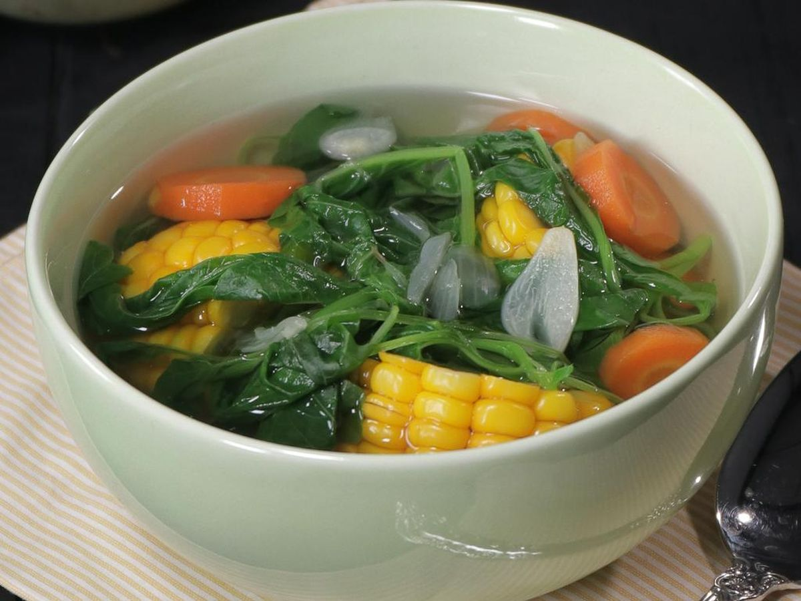

Disebut nasi campur karena terdiri dari nasi putih dicampur aneka lauk,
seperti sambal goreng, abon, serundeng, tahu goreng, ikan goreng, telur
dengan variasi tersendiri.
Nasi Pecel
Nasi Pecel
Makanan Berat
Pecel adalah makanan yang menggunakan bumbu sambal
kacang sebagai bahan utamanya yang dicampur dengan aneka
jenis sayuran.
Sayur Lodeh
Sayur Lodeh
Makanan Berkuah
Sayur lodeh adalah masakan sayur yang berkuah santan
khas Indonesia, terutama di daerah Jawa tengah,
menggunakan bahan utama labu siam yang kerap dicampur
bersama dengan kacang panjang, terung, petai, tempe,
cabai, dan jagung kecil.
Sayur Asem
Sayur Asem
Makanan Berkuah
Sayur asam atau sayur asem adalah masakan sejenis sayur yang khas Indonesia.
Ada banyak variasi lokal sayur asam seperti sayur asam Jakarta (variasi dari orang Betawi di Jakarta),
sayur asam kangkung (variasi yang menggunakan kangkung), dan sayur asam ikan asin.

Sayur Bayam
Sayur Bayam
Makanan Berkuah
Bayam merupakan salah satu jenis sayuran hijau yang
banyak ditanam dan dikembangkan di Asia, termasuk
Indonesia.